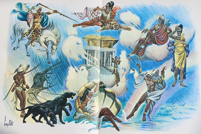

Estamos na terra do candomblé – disse o Arrelia, seguindo por uma velha rua juntamente com as crianças.
Vendo que elas apresentavam uma expressão de quem pergunta, ele tratou de esclarecer:
- Na Bahia usa-se a palavra candomblé para designar as cerimônias religiosas introduzidas pelos africanos, entendem? Com o tempo, estas cerimônias sofreram a influência de outras práticas religiosas do Brasil, é lógico, mas ainda continuam bem parecidas com as primeiras cerimônias. As divindades do candombe são os orixás. Há muitos outros, porém os mais importantes são: Xangô, Exu, Iansã, Oxum, Iemanjá, Oxóssi, Oxumaré . . . Não sei se me lembro de mais . . . Ah! Já sei! Ogum, Omolu e Oxalá. No início da escravidão, os negros foram proibidos de praticarem suas cerimônias porque eram consideradas bárbaras. A fim de conseguirem a concordância dos brancos, eles deram os nomes de alguns santos aos orixás. Por exemplo: Xang^é São Jerônimo e Oxóssi é São Jorge. Xangô tem um palácio muito bonito nas nuvens, todo feito de pedras e enfeitado com máscaras e pinturas. Uma vez Xangô havia convidado os outros orixás para uma grande festa que ia realizar-se ali. O palácio estava muito bem iluminado e quase rodos os orixás já se encontravam presentes. Só que Xangô não tinha chegado. Mas vamos sentar-nos primeiro.
Dirigiram-se a uma pequena e antiga praça e acomodaram-se nos rústicos, porém acolhedores bancos de madeira. Carlinhos deu mostras de querer ir atrás de um passarinho que pulava alegremente num canteiro, mas desistiu quando o Arrelia continuou a falar da festa dos orixás:
- Os músicos tocavam sem parar a fim de entreterem os convidados, e vários criados serviam as comidas prediletas dos orixás.
- Onde está Xangô? – perguntavam. Ninguém sabia.
Xangô é o orixá do trovão e do raio. Já fazia tempo que a festa devia ter começado quando o céu inteiro iluminou-se com uma porção de relâmpagos. O barulho dos trovões era tanto que os outros orixás tiveram que pôr as mãos nos ouvidos. Aí surgiu do meio dos relâmpagos a figura de Xangô. Vestido de branco e vermelho, com uma enorme capa e um barrete das mesmas cores, o saiote todo de dois cortes, chegou dançando e brandindo o machado. Quando Iansã, a divindade dos ventos e das tempestades, viu os raios, provocou um temporal daqueles. Os que estavam fora correram para dentro do palácio procurando refúgio. Aí Xangô perguntou:
- Onde está Oxumaré? A chuva que provocamos está tão forte que precisamos de ajuda para fazê-la parar!
Oxumaré é o orixá do arco-íris. Chovia tanto que dava medo e ele não aparecia. Todos os orixás que estavam ali começaram a gritar o nome dele bem alto: “Oxumaré! Oxumaré!” Depois de algum tempo ele percebeu o que estava acontecendo embora ainda estivesse longe, pois a chuva começou a abrandar. Por fim parou e todos começaram a dançar de contentamento. Formou-se então um belo arco-íris. Alguém gritou:
- Olhem! Oxumaré vem vindo!
Na curva do arco-íris apontou Oxumaré. Deslizando sempre, entrou no palácio e começou a dançar segurando nas mãos as cobras de ferro que são o seu símbolo. Oxumaré é o criado de Xangô e tem por obrigação transportar água da Terra para o palácio nas nuvens.
- Você trouxe água da Terra para o meu palácio? – perguntou Xangô a Oxumaré.
- Não, meu senhor – respondeu surpreso Oxumaré. Se choveu tão forte, para que trazer água?
Xangô ficou bravo e disse que queria água diretamente da Terra. Oxumaré deixou a festa muito a contragosto e partiu, pelo arco-íris, a fim de buscar água para Xangô esfriar o palácio porque era sempre quente por estar muito perto do Sol. No caminho, encontrou-se com Oxum, que é a divindade dos rios e das fontes, e pediu-lhe que o ajudasse a carregar a água até ao palácio senão ele ia perder a festa. Oxum concordou. Ela veste-se de branco e amarelo e carrega um espelho onde está sempre se olhando pois é muito vaidosa. Com a ajuda de Oxum, foi fácil a Oxumaré cumprir a missão. Os dois conseguiram empurrar a água pelo arco-íris até o palácio de Xangô. O palácio estava tão quente que ninguém aguentava mais. Oxumaré e Oxum jogaram a água para dentro e imediatamente o ambiente refrescou.
Depois da água, a festa tomou ânimo. Danças e cantos, comidas e bebidas. Porém não estava ainda “completa”: faltavam Iemanjá, a divindade do mar e mãe de todos os orixás, e Oxalá, que é o maior deles.
- Iemanjá ainda não veio? – quis saber Xangô. Oxalá sempre chega tarde, mas Iemanjá!. . .
imagem" id="a4"> - Está atrasada – respondeu Oxumaré. Já devia ter chegado.
De repente, ouviram um barulho de ondas do mar, que cada vez ficava mais forte. Era Iemanjá. Embora tenha a forma de sereia, ela apresentou-se com a forma de mulher, vestida de azul e branco e com as roupas enfeitadas por rendas muito bonitas.
- Por que demorou tanto? – perguntou Xangô. Já estávamos preocupados!
Iemanjá respondeu:
- Eu teria chegado bem mais cedo, não fosse o temporal que caiu há pouco. Foi tão forte que precisei ficar protegendo os barcos. Não foi brincadeira, não.
Xangô e Iansã olharam um para o outro lembrando-se da tempestade que haviam causado.
Estavam conversando quando a música silenciou completamente, Era Oxalá que chagava. Oxalá é a divindade da criação e, portanto, o maior de todos os orixás. Depois de receber muitas homenagens, os atabaques soaram mais fortes ainda e a festa continuou com “redobraudo” ânimo.
Os criados trouxeram nova remessa de comidas e bebidas. Todos comeram e beberam. E as danças? Cada um caprichava o mais que podia para dançar melhor do que os outros. Êta festa bonita!
- Olhe – disse Carlinhos. Eu só havia ouvido falar em Iemanjá. Meu pai sempre fala nela.
- Acho que é o orixá mais popular – respondeu o Arrelia. São inúmeras as festas que o povo realiza em sua homenagem.
Um preto velho que se sentara numa beira do banco onde estava Carlinhos não pode deixar de entrar na conversa:
- Vocês est ão falando na Rainha do Mar, não ;e mesmo? É a sereia mais linda que existe!
O Arrelia voltou-se para ele, interessado:
- O senhor já viu Iemanjá?
- Não, eu não. Mas sei de muita gente que viu. Perto de onde moro tem o Quinzinho, um moço pescador que viveu no mar muito tempo. Dentro do mar, compreendeu? Viu e conheceu Iemanjá.
- Não “diuga”! – exclamou o Arrelia, ajeitando-se melhor no banco. Como foi?
Todas as crianças olhavam atentamente para o negro, aguardando suas palavras.
- Primeiro quero dizer que o Quinzinho é um homem muito sério e respeitado por todos. Se quiserem, poderemos ir à casa dele e ele conta a estória. Senão ainda vão pensar que é exagero meu.
- Nada disso! – protestou o Arrelia, que já estava ansioso para ouvir a aventura. Conte o senhor mesmo! Não tem importância!
- Está bem. Agradeço a confiança. Foi assim.
Calou-se, puxou uma palha de um bolso, um pedaço de fumo e um canivete de outro, colocou a palha atrás da orelha e começou a picar o fumo com toda a tranquilidade. Depois de um bom tempo de silêncio, continuou, distraído, sem olhar para os seus ansiosos ouvintes:
- Foi assim que aconteceu: O Quinzinho naquele tempo era um homem muito fechado, muito caladão, e não pensava noutra coisa que não fosse trabalho. Quando voltava da pesca junto com seus companheiros, eles paravam na venda para beber e conversar, mas não o Quinzinho. Ia diretamente para casa e não sabia o que era sair até a hora de ir trabalhar outra vez. Em sua casa, sempre arranjava alguma coisa que fazer. Um bom homem. Tinha só um defeito: não acreditava nos orixás de jeito nenhum. Seus companheiros ficavam aborrecidos com ele e viviam pedindo que acreditasse nos orixás, principalmente em Iemanjá, de cuja proteção precisavam, pois, eram pescadores. Tinham medo que por causa da descrença dele todos iam acabar sofrendo a ira da Rainha do Mar. Só deixavam que ele trabalhasse junto porque era muito bom. O Quinzinho não queria saber de nada.
Êta homem durão, hein, Seu . . . Como é o seu nome? – perguntou o Arrelia.
O negro, que já havia preparado o fumo, começou a enrolar o cigarro. Sem tirar os olhos de seu trabalho, respondeu:
- Manoel. Mas sou conhecido por Maneco da Esquina, pois moro ali – e apontou para uma casinha muito antiga, de esquina, perto da praça.
Acendeu o cigarro com um isqueiro de modelo que não se vê mais nas grandes cidades, soltou uma baforada que o cobriu como se fosse um nevoeiro e fez o Arrelia tossir e dizer:
- Que fuminho forte, não, compadre? Esse é de derrubar!
- É um fuminho muito bom! – respondeu o outro, olhando para o Arrelia com surpresa. Não é fácil encontrar um fuminho assim, não.
Soltou outra baforada com grande prazer e continuou:
- O Quinzinho e seus companheiros continuaram sua vida de pescadores. Um dia, vinham voltando com o barco cheio de peixes, pois tinha sido um dia de sorte, quando um deles puxou conversa sobre Iemanjá:
- Até que a Rainha do Mar é muito bondosa deixando a gente pescar assim – disse ele.
- Não é bom falar – respondeu um outro. Ela é capaz de se lembrar que neste barco tem alguém que não acredita nela e aí sim. Pagamos todos juntos.
Pois olhe, foi só dizer e pronto. O céu, que estava sem uma nuvem, ficou negro em poucos minutos. O mar, que mais parecia um espelho de tão calmo, ficou todo encapelado. Vinha uma tempestade daquelas. Ninguém do barco falou mais. Começaram a remar com toda a força que possuíam, loucos para chegar depressa à praia. Ela não estava longe.
- Quem? – perguntou o Arrelia – Iemanjá?
- Não, moço. A praia. Eles estavam bem perto da praia e não conseguiam chegar. Remavam, remavam e nada. Todos, menos o Quinzinho, estavam com medo de Iemanjá. Um deles achou que ela já estava bem perto.
- Quem, a praia? – interrogou outra vez o Arrelia.
- Não, moço. Iemanjá! Um deles estava com o pressentimento de que ela não se encontrava longe. Começaram a jogar na água tudo o que era possível como presentes para a Rainha do Mar. Um dos pescadores disse que o Quinzinho era o motivo daquele castigo e que o único modo de acalmar Iemanjá era jogar o coitado fora do barco.
- Que amigo da onça, não, Seu Maneco? – o Arrelia não pode deixar de dizer.
- Era o medo! O medo! Numa hora assim cada um quer salvar sua pele.
- E foi “jogaudo” na água?
- Não, não foi. Os outros não deixaram.
Mas então desabou a tempestade. Coitado do barquinho. Subia e descia, descia e subia, sacudindo os coitados dos pescadores. De repente, a tempestade passou, tão depressa como tinha vindo. O mar se acalmou e o céu ficou limpo. Os pescadores suspiraram aliviados.
- Essa foi a vingança de Iemanjá? – quis saber Iberê, que esperava algo de mais terrível.
- Calma, menino! – pediu Seu Maneco da Esquina. A estória ainda não acabou.
- Arre, Iberê! – exclamou Marisa, surpresa com o desejo do menino. Você não ficou contente com o sofrimento deles?
- É, mas aconteceu mais coisa, sim – disse Seu Maneco. Se fosse só isso não era nada.
O velho tirou novamente o isqueiro do bolso, tornou a acender o cigarro que se havia apagado, soltou outra baforada, o Arrelia tossiu e ele continuou:
- Quando tudo parecia estar outra vez calmo, o barco foi sacudido com tal força que os homens caíram. Gritavam que dava pena. Nem tinha dúvida: era Iemanjá, raivosa com a descrença do Quinzinho. Logo em seguida, o barco foi virado como se fosse um brinquedo. Todos eles caíram na água. Eram bons nadadores, o mar estava calmo e a praia perto. Trataram de nadar. Depois de algum esforço, arrastaram-se exaustos pela areia. Ficaram ali tomando fôlego. Ainda bem que todos haviam escapado. Todos? E o Quinzinho? Onde estava ele? Tinha ficado no mar. “Coitado. Um homem tão bom!” Até o que desejava que ele fosse jogado na água concordou.
- Iemanjá o havia “pegaudo”? – perguntou o Arrelia torcendo o chapéu.
Seu Maneco prosseguiu:
- Sim, havia. Mas espere aí.
Seus amigos foram embora muito tristes e levaram para a cidade a notícia da desgraça. Não houve um que não ficasse aborrecido. E não era para menos. Um homem que não amolava ninguém . . .
- Seu Maneco! – gritou Carlinhos, louco de impaciência. O senhor não disse que podia chamar o Quinzinho para contar a estória se quiséssemos?
- Disse. Disse que podíamos ir à casa dele.
- Mas se ele morreu afogado! . . .
- Eu não disse isso – negou Seu Maneco, jogando fora o toco do cigarro.
- Essa não entendo!
- Vai entender. É só esperar – pediu o velho, pegando nova palha, o canivete e o pedaço de fumo. O Arrelia suspirou. Ia começar a fogueira outra vez.
- Depois de algumas semanas – continuou Seu Maneco – os pescadores companheiros do Quinzinho estavam preparando o barco para a partida quando viram alguém sair do mar e caminhar na direção deles. Apesar da barba grande e de estar ensopado, foi fácil ver que era o Quinzinho a estranha aparição. Alguns dos pescadores correram para longe dele. Outros, não tendo forças para tanto, caíram de joelhos. O Quinzinho foi logo dizendo que não tivessem medo. Que não era um fantasma, não. Estava muito cansado e queria ir para casa. Depois contava o que havia acontecido com ele. O rebuliço que causou a volta dele à cidade nem é bom dizer. Todos queriam pegar nele, pedir que contasse a estória, mas o pobre estava mesmo cansado e só queria dormir. Depois de alguns dias ele resolveu contar sua aventura. Eu também estava lá e ouvi tudo.
Todos procuraram chegar mais perto do velho apesar da fumaça. Seu Maneco sorriu vendo o interesse do Arrelia e das crianças.
- Assim que o Quinzinho caiu na água – começou – viu uma mulher muito bonita, de longos cabelos, metade gente, metade peixe. Ele já estava começando a se afogar quando ela fez uns gestos com as mãos. Logo ele se sentiu melhor e pôde respirar outra vez. Ela segurou a mão dele e seguiram os dois para o fundo do mar. O Quinzinho ficou bobo vendo o grande número de barcos e navios caídos ali.
- Os que viajavam nesses barcos e navios não acreditavam em mim – disse a Rainha do Mar.
O Quinzinho engoliu em seco. Ela continuou:
- Morreram quase todos. Só não aconteceu com vocês porque os outros me respeitavam e você é um bom homem. Assim, resolvi mostrar-lhe o que sou capaz de fazer aos descrentes. Também ficará conhecendo alguns dos lugares onde vivo.
Seguiram por ali, ela nadando, ele andando. Mais tarde surgiu um palácio enorme, todo de cristal! Era um dos palácios de Iemanjá.
- Você será o primeiro a visitar meus domínios – prosseguiu ela. Faço isso porque sei que você não é mentiroso e que todos acreditarão no que você contar.
- Quer dizer que voltarei para minha casa? – perguntou ele animando-se.
- Sim. Voltará depois de haver visto o suficiente para conhecer a minha força e o meu poder.
O Quinzinho notou como Iemanjá era respeitada pelos habitantes das águas. As ostras se abriam, os cavalos-marinhos se curvavam, os tubarões tremiam e iam embora.
Chegaram ao palácio de cristal. Ela fez um gesto e a grande porta se abriu lentamente. Entraram. Ele viu salões e salões de flores e de outros presentes oferecidos pelos seus devotos. Havia um salão só com animais vivos, especialmente cavalos. Vocês sabem que muitas pessoas dão animais vivos para ela?
- Sabemos sim. Isso eu sei – respondeu o Arrelia com um ar de importante.
Mais algumas baforadas e o velho continuou:
- Veja – mandou a Rainha do Mar. Está vendo como guardo cuidadosamente todos os presentes que recebo? Agora venha comigo para conhecer a outra parte do meu palácio.
- É aqui que a senhora mora? Este palácio é seu? – perguntou Quinzinho com todo o respeito.
Este é um dos meus palácios. Tenho diversos por todas as partes do mundo. Agora, dizer que eu moro aqui não é bem verdade. Moro em todos e não moro em nenhum, entende? Visito todos os meus palácios, mas rapidamente. Não tenho tempo. Tenho de estar nadando por todos os lugares do mundo. Mas venha conhecer a outra parte do palácio.
Puxou o Quinzinho, outra porta se abriu e ele ficou admirado com o que encontrou.
- E o que foi? – perguntou o Arrelia, abanando-se com o chapéu para livrar-se do “nevoeiro” que o velho fazia com seu cigarro.
- O senhor não faz ideia. Naquela parte só havia prisões.
- Prisões?!
- Sim, senhor. Prisões. Umas cheias de homens, outras de mulheres. Estavam todos acordados, mas pareciam não ver nada.
- Quem são esses? – perguntou o Quinzinho, os olhos arregalados.
- São meus escravos – respondeu Iemanjá. Não acreditavam em mim. Somente se salvaram porque preciso de escravos.
O Quinzinho começou a tremer pensando que ia ter igual sorte.
- Não se assuste – animou-o Iemanjá. Já disse que você vai voltar para casa. Esses não acreditavam e caçoavam. Não é o seu caso. Você apenas não acreditava, não é mesmo?
- Sim, senhora. E por que eles não dizem nada?
- Porque estão hipnotizados. Não pensam.
- E vão ficar sempre aqui?
- Não sei. É capaz que algum dia eu resolva deixar que eles voltem para casa. Vamos ver.
- E o que eles fazem?
- São utilizados por mim para recolher presentes. Principalmente nas grandes festas que os meus devotos me dedicam. As águas ficam cheias de oferendas e aí o trabalho deles se torna necessário.
O Quinzinho contou que foi com ela conhecer outros palácios, todos mais ou menos parecidos. Havia alguns feitos de prata, outros de ouro. A maioria dos palácios, porém, era de cristal. Alguns deles estavam rodeados de flores, flores vivas, plantadas. O Quinzinho quis saber como é que elas podiam viver ali. Iemanjá explicou:
- Essas flores foram-me oferecidas por alguns dos outros orixás. Elas conseguem viver aqui por causa da dedicação deles.
O Quinzinho ficou olhando, olhando, sem saber como é que aquelas flores não morriam.
- Vou explicar – disse ela. Os orixás que me deram essas plantas trouxeram terra própria, está vendo? E toda a noite eles trazem água dos rios e um pouco de ar de fora para que elas não morram.
- Não estou acreditando muito nisso, não – disse Sérgio em voz baixa.
Jaci deu-lhe um beliscão:
- Psiu! Fique quieto! Quer criar caso com Iemanjá?
O velho não percebeu e continuou a falar:
- O Quinzinho ficou várias semanas dentro do mar conhecendo os palácios. Um dia ela disse que ele podia voltar para casa. Fez um sinal e surgiu uma carruagem aberta, toda feita de cristal, puxada por uma porção de cavalos-marinhos. Os dois subiram e tomaram a direção da praia. Quando chegaram perto, ela mandou que ele descesse e continuasse sozinho. Foi aí que ele encontrou os companheiros que se preparavam para sair de barco.
- Interessante – disse o Arrelia. E o Quinzinho passou a acreditar em Iemanjá?
- Que pergunta! – surpreendeu-se o velho. Não duvida um só minuto. E como podia duvidar? Olhe! Lá vem ele!
- Ah! É “aqueule”? E aonde vai com aquelas flores? Mais parece um jardim!
- Aonde vai? Presentear Iemanjá! Faz isso todos os dias!
Seu Maneco da Esquina tirou uma fumaça bem caprichada que fez o Arrelia afastar-se, esperando o “nevoeiro”.
- Ói, moço, conheço outras estórias sobre a Rainha do Mar. Tem uma . . .
- Fica para outra vez, Seu Maneco. Temos de ir andando. Depois . . .
Olhou para o cigarro do velho que ardia furiosamente e completou:
- Depois não quero virar toicinho “defumado”.